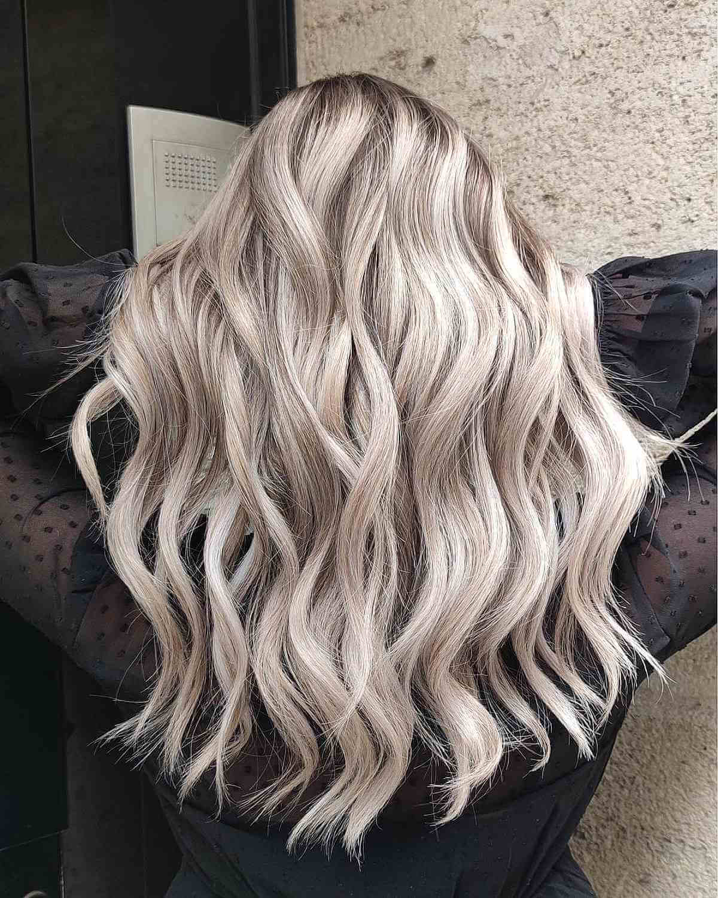

Brunettes are bright enough from nature, so they may enjoy a variety of short, medium and long brown hairstyles in their natural hair color. At the same time experimenting with shades of brown hair is a big joy. Get inspired by our galleries of brown hairstyles and hair color ideas.
Hair Color Ideas
Not so many women are absolutely happy with the natural color of their hair. Even if it’s so, it’s in the female nature to seek versatility and try new things to change her looks. The first thing that comes to mind in this relation is trying new hair colors. Hair color ideas can be drawn from any source – nature, modern art, fashion color palettes and combinations, etc. Hair color trends are not restricting, quite the opposite. Every hair color will find its place under the sun this year, from soft balayage and ombre blends in natural hues of blonde, brown and red through more pronounced gray, caramel, auburn and burgundy shades to completely unnatural neon and pastel hair dye colors. Now is the best time to try the color you have always dreamt of no matter how crazy it is!
Hair Color Chart: Shades of Blonde, Brunette, Red & Black
For anyone looking to enhance their hair color or change it entirely, a hair color chart is definitely a useful tool for determining which one of the many shades to choose.
There are four main hair colors: blonde, brunette, red, and black and these colors can be changed slightly in tone to create a different appearance. For example blonde color can be combined with cooler tones to produce a hair color like ash blonde or champagne.
This process can be applied to all shades for a wide selection of hair color choices to match anyone’s personal preference.
A hair color chart shows tones from blonde to black and makes it easier to find a color in a particular range and its possible appearance on hair strands. The majority of charts provides many options for each of the main colors and in cool, warm, and neutral tones.
Each chart below is from a major hair care product company who produce some of the top at home hair coloring products. These charts are an excellent way to find hair color ideas.
Not all of the hair colors are listed but there are enough to show the variety of products. Many of the hair colors look the same but with different names for each chart.
L’Oreal Feria’s Hair Color Chart
The L’Oreal Feria line shows how bright and rich hair color can be and two of the best looking colors in the product line are sunflower blonde which has a warm tone great for summer and crushed garnet which has a cooler tone.
Blowout Burgundy
Caramel
Chocolate Cherry
Copper Shimmer

Crushed Garnet
Espresso
French Roast
Havana Brown
Hot-Toffee
Leather Black
Midnight Ruby
Ruby Fusion
Clairol’s Perfect 10’s Hair Color Chart
Clairol’s Perfect 10 line shows of some stunning variance in hair colors, especially for blonde and brown shades. The light ash blonde, light golden brown, and medium reddish blonde are all beautiful shades.

Beeline Honey
c-Butterscotch

chocolate brown

dark golden brown
expresso

jet black

light ash blonde

light blonde

light cool brown

Light golden blonde

light golden brown

medium ash brown

medium auburn

medium champagne

red hot cinnamon

reddish blonde
Garnier Nutrisse’s Hair Color Chart
The Garnier Nutrisse hair color line offers 38 shades in cool, neutral, and warm tones with a few unique choices. Some colors that really stand out in the hair color chart are the true red pomegranate, light reddish brown, and deep burgundy.
Latest Articles
brown hair color

balayage hair color
Balayage hair is today’s synonym of modern hair. Flat, monotonous colors gave way to multidimensional dye jobs that work in pair with trendy haircuts to create dynamic hairstyles full of texture and volume. Every balayage hair color is one-of-a-kind because it looks different on every head of hair, depending on the base color, chosen cut, and natural texture of the hair.
blonde hair color
Why do gentlemen prefer blondes? Girls with blonde hair are associated with lightness of being, good carelessness and tender femininity. Whether you are currently rocking short blonde hair or long fair curls, any blonde hairstyle in fact, you are a fairy in men’s eyes.
burgundy hair color
Burgundy hair color is not natural, but it looks maximally natural when applied to dark hair, so it’s one of the best hair color upgrades for brunettes who want a visible, yet not so radical change in hair color. At the same time, going for burgundy hair can be a step to a vibrant hue, you’ve never worn before.
caramel hair color
Caramel hair color is among the most popular hues for highlights today, because it flatters blondes, brunettes and redheads. Black hair with caramel highlights offers a nice contrast of shades that is however not too stark. Those girls who want to try less contrasting solutions that refresh the complexion and make the eyes brighter should try caramel blonde hair or light caramel brown hair.
gray hair color
Gray hair color on young girls does not surprise anyone today. Well, the gray hair trend has found its way to the hearts and heads of fashionistas. In its turn it encouraged many older ladies to embrace their gray locks. No matter how young or old you are, if you like gray hair, look through our galleries for inspiration

Red hair color
Not so many people are blessed with red hair color by nature, but, luckily, the beauty industry gives us opportunities to try whatever hair color we want. Discover the bright world of red hairstyles and haircuts and add some color to your look and life.
ombre hair color
The rational ombre hair color choices depend to a great extent on the natural color of your hair and partially on its length but are not limited by them. You can easily decide on a reverse ombre or try unexpected short ombre hair versions for a more original sharper look. And beautiful long tresses, of course, fulfill the concept of ombre at fullest.

hair highlight
The rational ombre hair color choices depend to a great extent on the natural color of your hair and partially on its length but are not limited by them. You can easily decide on a reverse ombre or try unexpected short ombre hair versions for a more original sharper look. And beautiful long tresses, of course, fulfill the concept of ombre at fullest.